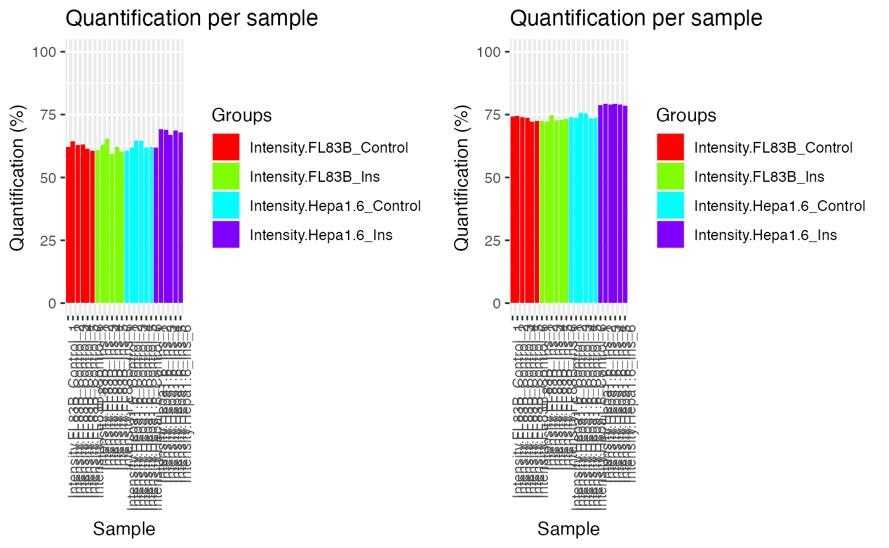
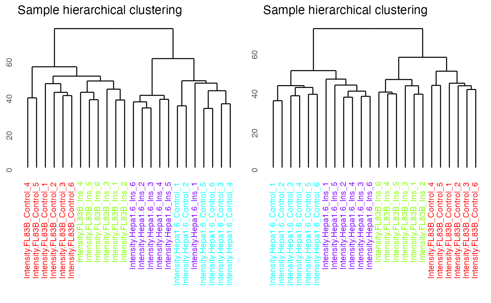

imputation.RmdPhosR is a package for the all-rounded analysis of phosphoproteomic data from processing to downstream analysis. This vignette will provide a step-by-step workflow of how PhosR can be used to process and analyse a panel of phosphoproteomic datasets. As one of the first steps of data processing, we will begin by performing filtering and imputation of the data with PhosR.
First, we will load the PhosR package. If you already haven’t done so, please install PhosR as instructed in the main page.
suppressPackageStartupMessages({
library(PhosR)
})We assume that you will have the raw data processed using platforms frequently used for mass-spectrometry based proteomics such as MaxQuant. For demonstration purposes, we will take a parts of phosphoproteomic data generated by Humphrey et al. with accession number PXD001792. The dataset contains the phosphoproteomic quantifications of two mouse liver cell lines (Hepa1.6 and FL38B) that were treated with either PBS (mock) or insulin.
Let us load the PhosphoExperiment (ppe) object.
data("phospho.cells.Ins.pe")
ppe <- phospho.cells.Ins.pe
class(ppe)
#> [1] "PhosphoExperiment"
#> attr(,"package")
#> [1] "PhosR"A quick glance of the object.
ppe
#> class: PhosphoExperiment
#> dim: 5000 24
#> metadata(0):
#> assays(1): Quantification
#> rownames(5000): Q7TPV4;MYBBP1A;S1321;PQSALPKKRARLSLVSRSPSLLQSGVKKRRV
#> Q3UR85;MYRF;S304;PARAPSPPWPPQGPLSPGTGSLPLSIARAQT ...
#> P28659-4;NA;S18;AFKLDFLPEMMVDHCSLNSSPVSKKMNGTLD
#> E9Q8I9;FRY;S1380;HNIELVDSRLLLPGSSPSSPEDEVKDREGEV
#> rowData names(0):
#> colnames(24): Intensity.FL83B_Control_1 Intensity.FL83B_Control_2 ...
#> Intensity.Hepa1.6_Ins_5 Intensity.Hepa1.6_Ins_6
#> colData names(0):We will take the grouping information from colnames of our matrix.
For each cell line, there are two conditions (Control vs Insulin-stimulated) and 6 replicates for each condition.
# FL38B
gsub("Intensity.", "", grps)[1:12]
#> [1] "FL83B_Control" "FL83B_Control" "FL83B_Control" "FL83B_Control"
#> [5] "FL83B_Control" "FL83B_Control" "FL83B_Ins" "FL83B_Ins"
#> [9] "FL83B_Ins" "FL83B_Ins" "FL83B_Ins" "FL83B_Ins"
# Hepa1
gsub("Intensity.", "", grps)[13:24]
#> [1] "Hepa1.6_Control" "Hepa1.6_Control" "Hepa1.6_Control" "Hepa1.6_Control"
#> [5] "Hepa1.6_Control" "Hepa1.6_Control" "Hepa1.6_Ins" "Hepa1.6_Ins"
#> [9] "Hepa1.6_Ins" "Hepa1.6_Ins" "Hepa1.6_Ins" "Hepa1.6_Ins"Note that there are in total 24 samples and 5,000 phosphosites profiled.
dim(ppe)
#> [1] 5000 24Next, we will perform some filtering of phosphosites so that only phosphosites with quantification for at least 50% of the replicates in at least one of the conditions are retained. For this filtering step, we use the selectGrps function. The filtering leaves us with 1,772 phosphosites.
ppe_filtered <- selectGrps(ppe, grps, 0.5, n=1)
dim(ppe_filtered)
#> [1] 1772 24selectGrps gives you the option to relax the threshold for filtering. The filtering threshold can therefore be optimized for each dataset.
# In cases where you have fewer replicates ( e.g.,triplicates), you may want to select phosphosites quantified in 70% of replicates.
ppe_filtered_v1 <- selectGrps(ppe, grps, 0.7, n=1)
dim(ppe_filtered_v1)
#> [1] 1330 24We can proceed to imputation now that we have filtered for suboptimal phosphosites. To take advantage of data structure and experimental design, PhosR provides users with a lot of flexibility for imputation. There are three functions for imputation: scImpute,tInmpute, and ptImpute. Here, we will demonstrate the use of scImpute and ptImpute.
The scImpute function is used for site- and condition-specific imputation. A pre-defined thereshold is used to select phosphosites to impute. Phosphosites with missing values equal to or greater than a predefined value will be imputed by sampling from the empirical normal distribution constructed from the quantification values of phosphosites from the same condition.
In the above example, only phosphosites that are quantified in more than 50% of samples from the same condition will be imputed.
We then perform paired tail-based imputation on the dataset imputed with scImpute. Paired tail-based imputation performs imputation of phosphosites that have missing values in all replicates in one condition (e.g. in basal) but not in another condition (e.g., in stimulation). This method of imputation ensures that we do not accidentally filter phosphosites that seemingly have low detection rate.
As for scImpute, we can set a predefined threshold to in another condition (e.g. stimulation), the tail-based imputation is applied to impute for the missing values in the first condition.
set.seed(123)
ppe_imputed <- ppe_imputed_tmp
ppe_imputed[,seq(6)] <- ptImpute(ppe_imputed[,seq(7,12)],
ppe_imputed[,seq(6)],
percent1 = 0.6, percent2 = 0, paired = FALSE)
ppe_imputed[,seq(13,18)] <- ptImpute(ppe_imputed[,seq(19,24)],
ppe_imputed[,seq(13,18)],
percent1 = 0.6, percent2 = 0, paired = FALSE)Lastly, we perform normalisation of the filtered and imputed phosphoproteomic data.
ppe_imputed_scaled <- medianScaling(ppe_imputed, scale = FALSE, assay = "imputed")A useful function in PhosR is to visualize the percentage of quantified sites before and after filtering and imputation. The main inputs of plotQC are the quantification matrix, sample labels (equating the column names of the matrix), an integer indicating the panel to plot, and lastly, a color vector. To visualize the percentage of quantified sites, use the plotQC function and set panel = quantify to visualise bar plots of samples.
p1 = plotQC(ppe_filtered@assays@data$Quantification, labels=colnames(ppe_filtered),
panel = "quantify", grps = grps)
p2 = plotQC(ppe_imputed_scaled@assays@data$scaled,
labels=colnames(ppe_imputed_scaled), panel = "quantify", grps = grps)
ggpubr::ggarrange(p1, p2, nrow = 1)
By setting panel = dendrogram, we can visualise the results of unsupervised hierarchical clustering of samples as a dendrogram. The dendrogram demonstrates that imputation has improved the clustering of the samples so that replicates from the same conditions cluster together.
p1 = plotQC(ppe_filtered@assays@data$Quantification,
labels=colnames(ppe_filtered), panel = "dendrogram",
grps = grps)
p2 = plotQC(ppe_imputed_scaled@assays@data$scaled,
labels=colnames(ppe_imputed_scaled),
panel = "dendrogram", grps = grps)
ggpubr::ggarrange(p1, p2, nrow = 1)
We can now move onto the next step in the PhosR workflow: integration of datasets and batch correction.
sessionInfo()
#> R version 4.4.1 (2024-06-14)
#> Platform: aarch64-apple-darwin20
#> Running under: macOS Sonoma 14.7
#>
#> Matrix products: default
#> BLAS: /Library/Frameworks/R.framework/Versions/4.4-arm64/Resources/lib/libRblas.0.dylib
#> LAPACK: /Library/Frameworks/R.framework/Versions/4.4-arm64/Resources/lib/libRlapack.dylib; LAPACK version 3.12.0
#>
#> locale:
#> [1] en_US.UTF-8/en_US.UTF-8/en_US.UTF-8/C/en_US.UTF-8/en_US.UTF-8
#>
#> time zone: UTC
#> tzcode source: internal
#>
#> attached base packages:
#> [1] stats graphics grDevices utils datasets methods base
#>
#> other attached packages:
#> [1] PhosR_1.13.1 BiocStyle_2.30.0
#>
#> loaded via a namespace (and not attached):
#> [1] bitops_1.0-9 gridExtra_2.3
#> [3] rlang_1.1.4 magrittr_2.0.3
#> [5] matrixStats_1.4.1 e1071_1.7-16
#> [7] compiler_4.4.1 reshape2_1.4.4
#> [9] systemfonts_1.1.0 vctrs_0.6.5
#> [11] stringr_1.5.1 pkgconfig_2.0.3
#> [13] shape_1.4.6.1 crayon_1.5.3
#> [15] fastmap_1.2.0 backports_1.5.0
#> [17] XVector_0.42.0 labeling_0.4.3
#> [19] utf8_1.2.4 rmarkdown_2.28
#> [21] markdown_1.13 preprocessCore_1.64.0
#> [23] ragg_1.3.3 network_1.18.2
#> [25] purrr_1.0.2 xfun_0.48
#> [27] zlibbioc_1.48.2 cachem_1.1.0
#> [29] GenomeInfoDb_1.38.8 jsonlite_1.8.9
#> [31] highr_0.11 DelayedArray_0.28.0
#> [33] broom_1.0.7 R6_2.5.1
#> [35] stringi_1.8.4 bslib_0.8.0
#> [37] RColorBrewer_1.1-3 limma_3.58.1
#> [39] GGally_2.2.1 car_3.1-3
#> [41] GenomicRanges_1.54.1 jquerylib_0.1.4
#> [43] Rcpp_1.0.13 bookdown_0.41
#> [45] SummarizedExperiment_1.32.0 knitr_1.48
#> [47] IRanges_2.36.0 Matrix_1.7-0
#> [49] igraph_2.1.1 tidyselect_1.2.1
#> [51] abind_1.4-8 yaml_2.3.10
#> [53] viridis_0.6.5 ggtext_0.1.2
#> [55] lattice_0.22-6 tibble_3.2.1
#> [57] plyr_1.8.9 withr_3.0.2
#> [59] Biobase_2.62.0 coda_0.19-4.1
#> [61] evaluate_1.0.1 desc_1.4.3
#> [63] ggstats_0.7.0 proxy_0.4-27
#> [65] xml2_1.3.6 circlize_0.4.16
#> [67] pillar_1.9.0 BiocManager_1.30.25
#> [69] ggpubr_0.6.0 MatrixGenerics_1.14.0
#> [71] carData_3.0-5 stats4_4.4.1
#> [73] generics_0.1.3 RCurl_1.98-1.16
#> [75] S4Vectors_0.40.2 ggplot2_3.5.1
#> [77] commonmark_1.9.2 munsell_0.5.1
#> [79] scales_1.3.0 class_7.3-22
#> [81] glue_1.8.0 pheatmap_1.0.12
#> [83] tools_4.4.1 dendextend_1.18.1
#> [85] ggsignif_0.6.4 fs_1.6.4
#> [87] cowplot_1.1.3 grid_4.4.1
#> [89] tidyr_1.3.1 colorspace_2.1-1
#> [91] GenomeInfoDbData_1.2.11 Formula_1.2-5
#> [93] cli_3.6.3 ruv_0.9.7.1
#> [95] textshaping_0.4.0 fansi_1.0.6
#> [97] S4Arrays_1.2.1 viridisLite_0.4.2
#> [99] ggdendro_0.2.0 dplyr_1.1.4
#> [101] pcaMethods_1.94.0 gtable_0.3.6
#> [103] rstatix_0.7.2 sass_0.4.9
#> [105] digest_0.6.37 BiocGenerics_0.48.1
#> [107] SparseArray_1.2.4 farver_2.1.2
#> [109] htmlwidgets_1.6.4 htmltools_0.5.8.1
#> [111] pkgdown_2.1.1 lifecycle_1.0.4
#> [113] GlobalOptions_0.1.2 statnet.common_4.10.0
#> [115] statmod_1.5.0 gridtext_0.1.5
#> [117] MASS_7.3-60.2